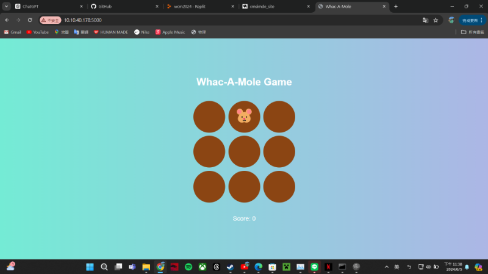

期末專案 <<
Previous Next >> 基礎語法
whack-a-mole
step1:問chatgpt如何製作打地鼠遊戲，用Flask來構建Web服務，並且用HTML、CSS和JavaScript來構建前端界面和遊戲邏輯。
step2:設置項目結構
whac_a_mole/
├── app.py
├── static/
│ ├── style.css
│ └── script.js
└── templates/
└── index.html
step3:安裝Flask
pip install flask
step4:編寫後端 (app.py)
from flask import Flask, render_template
app = Flask(__name__)
@app.route('/')
def index():
return render_template('index.html')
if __name__ == '__main__':
app.run(host='10.10.40.178', port=5000, debug=True)
step5: 編寫前端 (HTML, CSS, JavaScript)
HTML:
<!DOCTYPE html>
<html lang="en">
<head>
<meta charset="UTF-8">
<meta name="viewport" content="width=device-width, initial-scale=1.0">
<title>Whac-A-Mole</title>
<link rel="stylesheet" href="/static/style.css">
</head>
<body>
<h1>Whac-A-Mole Game</h1>
<div class="game">
<div class="hole" id="hole1"></div>
<div class="hole" id="hole2"></div>
<div class="hole" id="hole3"></div>
<div class="hole" id="hole4"></div>
<div class="hole" id="hole5"></div>
<div class="hole" id="hole6"></div>
<div class="hole" id="hole7"></div>
<div class="hole" id="hole8"></div>
<div class="hole" id="hole9"></div>
</div>
<p>Score: <span id="score">0</span></p>
<p>Time left: <span id="timer">30</span> seconds</p>
<script src="./../cmsimde/static/script.js"></script>
</body>
</html>
CSS:
body {
font-family: Arial, sans-serif;
text-align: center;
background: linear-gradient(to right, #74ebd5, #ACB6E5); /* 漸變背景 */
margin: 0;
padding: 0;
height: 100vh;
display: flex;
flex-direction: column;
justify-content: center;
align-items: center;
}
h1 {
color: #fff;
}
.game {
display: grid;
grid-template-columns: repeat(3, 100px);
grid-gap: 10px;
justify-content: center;
margin: 20px auto;
}
.hole {
width: 100px;
height: 100px;
background-color: #8B4513;
border-radius: 50%;
position: relative;
overflow: hidden; /* 確保地鼠不會超出洞口 */
}
.mole {
width: 80px;
height: 80px;
font-size: 3em; /* 增加表情符號大小 */
position: absolute;
top: 10px;
left: 10px;
display: none;
}
.hole.active .mole {
display: block;
}
p {
color: #fff;
font-size: 1.2em;
}
JavaScript:
let score = 0;
let activeHoles = [];
let gameInterval = null;
let gameTime = 30; // 遊戲時間30秒
let timerInterval = null;
let moleIntervalTime = 700; // 地鼠出現間隔時間，初始為700毫秒
let speedIncreaseCount = 0; // 速度增加次數
document.addEventListener("DOMContentLoaded", () => {
const holes = document.querySelectorAll('.hole');
holes.forEach(hole => {
const mole = document.createElement('div');
mole.classList.add('mole');
mole.textContent = '🐹'; // 使用表情符號來表示地鼠
hole.appendChild(mole);
hole.addEventListener('click', () => {
if (hole.classList.contains('active')) {
score++;
document.getElementById('score').textContent = score;
hole.classList.remove('active');
}
});
});
function randomHoles() {
// 清除上一次的地鼠
activeHoles.forEach(hole => hole.classList.remove('active'));
activeHoles = [];
// 隨機選擇1或2隻地鼠出現
let numMoles = Math.floor(Math.random() * 2) + 1;
let indices = [];
while (indices.length < numMoles) {
let index = Math.floor(Math.random() * holes.length);
if (!indices.includes(index)) {
indices.push(index);
}
}
indices.forEach(index => {
let hole = holes[index];
hole.classList.add('active');
activeHoles.push(hole);
});
}
function startGame() {
gameInterval = setInterval(randomHoles, moleIntervalTime);
timerInterval = setInterval(updateTimer, 1000);
}
function updateTimer() {
if (gameTime > 0) {
gameTime--;
document.getElementById('timer').textContent = gameTime;
if (gameTime % 10 === 0 && speedIncreaseCount < 3) {
increaseSpeed();
speedIncreaseCount++;
}
} else {
endGame();
}
}
function increaseSpeed() {
clearInterval(gameInterval);
moleIntervalTime = Math.max(300, moleIntervalTime - 100); // 每次減少100ms，直到300ms
gameInterval = setInterval(randomHoles, moleIntervalTime);
}
function endGame() {
clearInterval(gameInterval);
clearInterval(timerInterval);
activeHoles.forEach(hole => hole.classList.remove('active'));
alert('Game Over! Your final score is: ' + score);
}
startGame();
});
最後成果:

問過chatgpt的問題:
1.由於最一開始的遊戲是沒有時間的，所以第一個問題是請chatgpt幫我新增遊戲時間為30秒
2.因為一開始遊戲出來的樣子，地鼠是以笑臉的方式呈現，所以我請chatgpt幫我改成地鼠的圖案
3.後來因為地鼠出現的速度太慢，所以我請chatgpt幫我加快地鼠出現的速度
4.然後我為了增加遊戲的難易度及變化，所以我請chatgpt幫我把遊戲調成每10秒加快地鼠的速度
5.最後是我覺得背景過於單調，所以我請chatgpt幫我新增一個漸層的背景
期末專案 <<
Previous Next >> 基礎語法